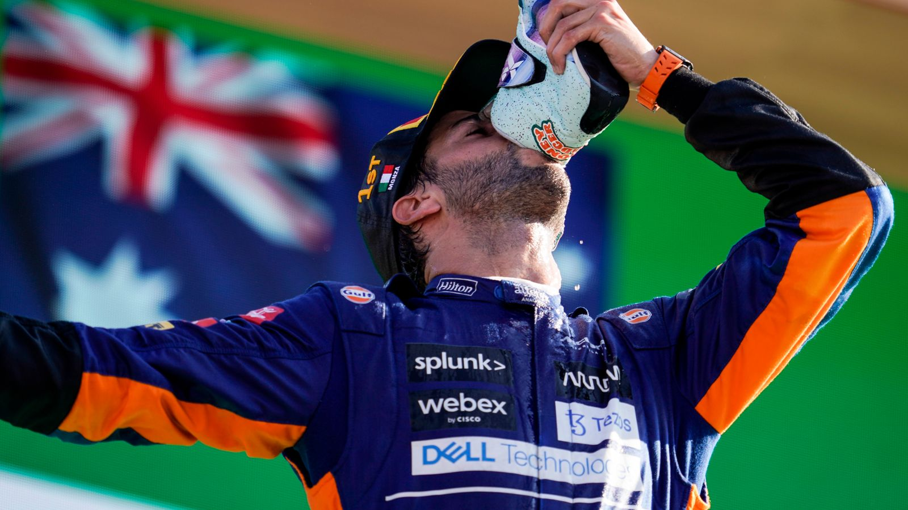
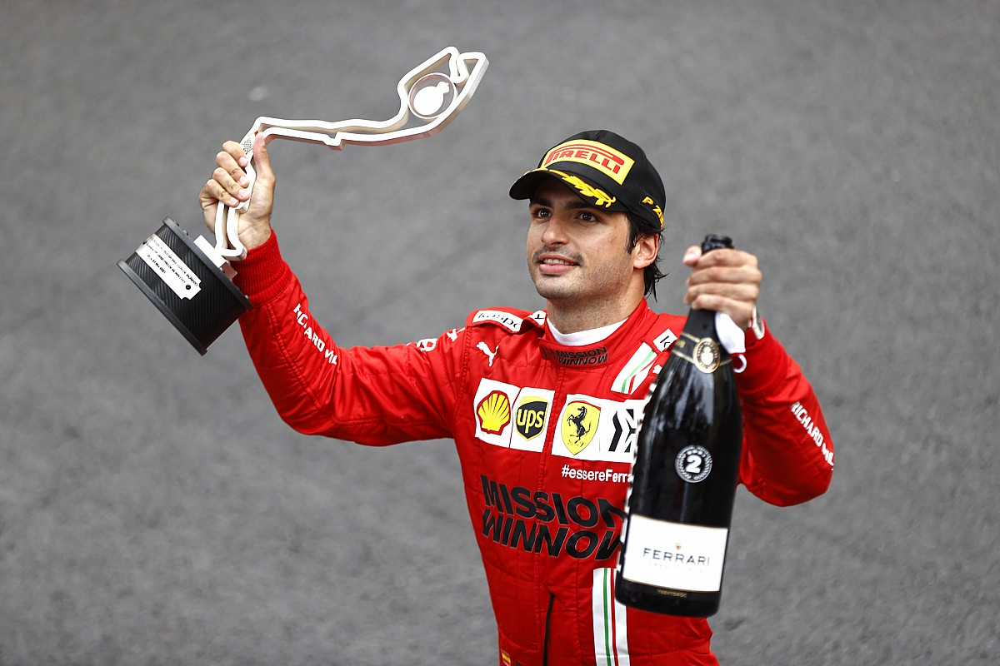
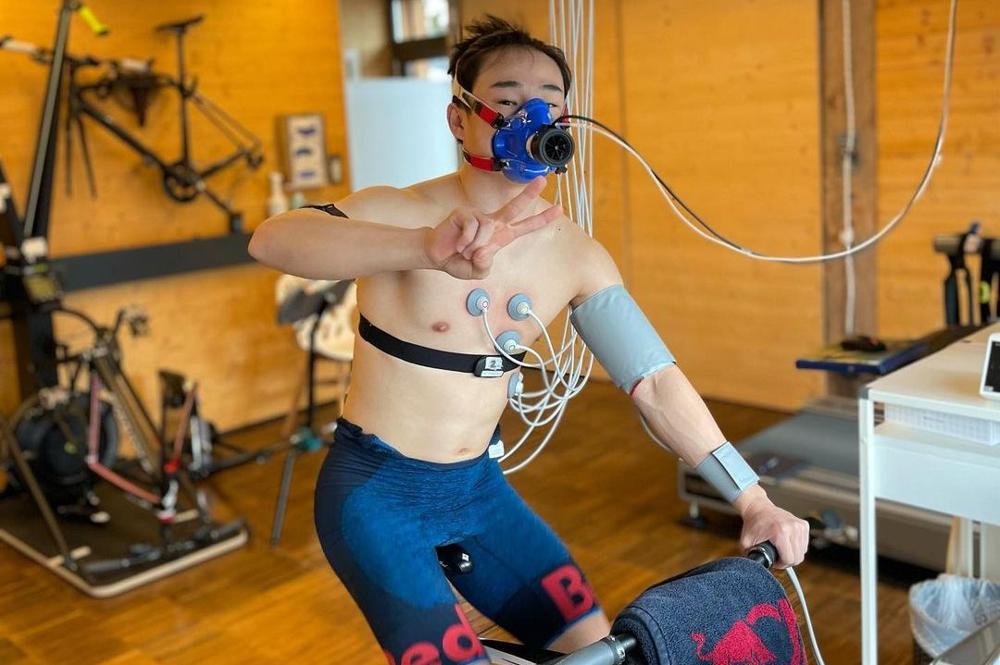

III. Au Cœur de la Formule 1
à travers les coulisses de la Formule 1, Drive to Survive suit les pilotes dans leur vie au quotidien révèlant les défis, les triomphes et les moments humains intenses vécus par les pilotes.
La Rivalité Hamilton-Verstappen
Nous allons en parler plus tard mais la rivalité électrique entre Lewis Hamilton et Max Verstappen se trouve Au cœur de la saison 4. La série plonge dans leur compétition acharnée, montrant non seulement leur bataille sur la piste mais aussi comment elle affecte les équipes et la dynamique au sein du paddock.

George Russell chez Mercedes
L'opportunité soudaine de George Russell de piloter pour Mercedes au Grand Prix de Sakhir en remplacement de Lewis Hamilton, testé positif à la COVID-19, est un moment phare. La série explore son incroyable performance, presque gagnante, mettant en lumière son potentiel et les émotions fortes liées à cette expérience.

Le Défi Mental de Daniel Ricciardo
Après un démarrage difficile avec McLaren, la saison suit Ricciardo dans sa quête pour retrouver sa forme de pointe, y compris sa victoire émotive au Grand Prix d'Italie. Son voyage met en évidence les difficultés mentales et les doutes auxquels les pilotes peuvent être confrontés, ainsi que leur résilience.

L'Ascension de Pierre Gasly
Continuant sur sa lancée après une victoire surprise en 2020, Gasly affronte la pression de maintenir ses performances élevées avec AlphaTauri. La série documente sa lutte pour se prouver dans un environnement ultra-compétitif.

Les Émotions de Carlos Sainz et son Adaptation à Ferrari
Le passage de Sainz à Ferrari et son adaptation à l'équipe illustrent les défis de changer d'équipe et les attentes qui accompagnent le fait de piloter pour un tel nom emblématique dans le sport.

L'Adaptation Physique de Yuki Tsunoda
La saison met en lumière les défis particuliers auxquels Yuki Tsunoda fait face en s'adaptant à la rigueur physique de la Formule 1. Sa transition depuis les catégories inférieures vers le pinacle du sport automobile souligne non seulement les défis physiques mais aussi l'apprentissage technique et mental nécessaire pour concourir au plus haut niveau.
